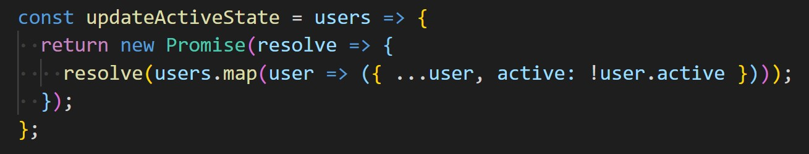
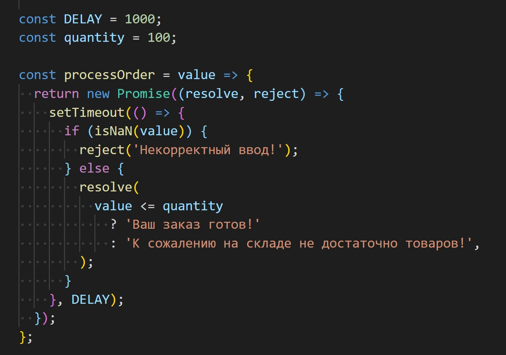

1.
Ознакомься с содержанием панелей HTML и CSS.
Напиши скрипт который сохраняет выбранную пользователем тему в
localStorage
и, при следующих посещениях страницы, устанавливает ее автоматически.
По умолчанию пусть будет светлая тема.
При выборе темы, добавляй на элемент body соответствующий класс.
2.
Есть массив цветов в hex-формате и кнопки Start и Stop.
Напиши скрипт, который после нажатия кнопки Start,
раз в
секунду меняет цвет фона текста на случайное значение из массива.
Используй инлайн-стиль для изменения background-color.
При нажатии на кнопку Stop, изменении цвета фона должно
останавливаться.
Учти, что на кнопку Start можно нажать бесконечное количество раз.
Сделай так, чтобы пока изменение темы запушено, кнопка Start была не
активна.
3.
Напиши функцию delay(ms), которая возвращает промис,
переходящий в состояние "resolved" через ms миллисекунд.
Значением исполнившегося промиса должно быть то кол-во
миллисекунд которое передали во время вызова функции delay.
4.
Перепиши функцию updateActiveState так, чтобы она
не использовала callback-функцию, а возвращала промис.
const users = [
{ name: 'Mango', active: true },
{ name: 'Poly', active: false },
{ name: 'Ajax', active: true },
{ name: 'Lux', active: false },
];
const updateActiveState = (users, callback) => {
const updatedUsers = users.map(user => ({ ...user, active: !user.active }));
callback(updatedUsers);
};
updateActiveState(users, console.table);
Должно работать такupdateActiveState(users).then(console.table);
5.
Есть переменная quantity хранящиая в себе
текущее количество единиц какого-то товара на складе.
Напиши функцию processOrder(value), получающую
кол-во товаров заказанных покупателем, и возвращающую промис.
Для имитации проверки достаточного количества товаров
на складе используй setTimeout с задержкой 500мс.
Если на складе товаров больше либо равно заказанному
количеству, функция возвращает промис который исполняется
успешно со строкой "Ваш заказ готов!".
В противном случае, со строкой "К сожалению на складе не достаточно товаров!".
Если же пользователь ввел не число, то промис выполняется с ошибкой
и значением "Некорректный ввод!".
Вызовы функции для проверки
processOrder(50)
.then(console.log) // Ваш заказ готов!
.catch(console.log);
processOrder(50)
.then(console.log) // Ваш заказ готов!
.catch(console.log);
processOrder(500)
.then(console.log) // К сожалению на складе недостаточно товаров!
.catch(console.log);
processOrder('lorem')
.then(console.log)
.catch(console.log); // Некорректный ввод!
